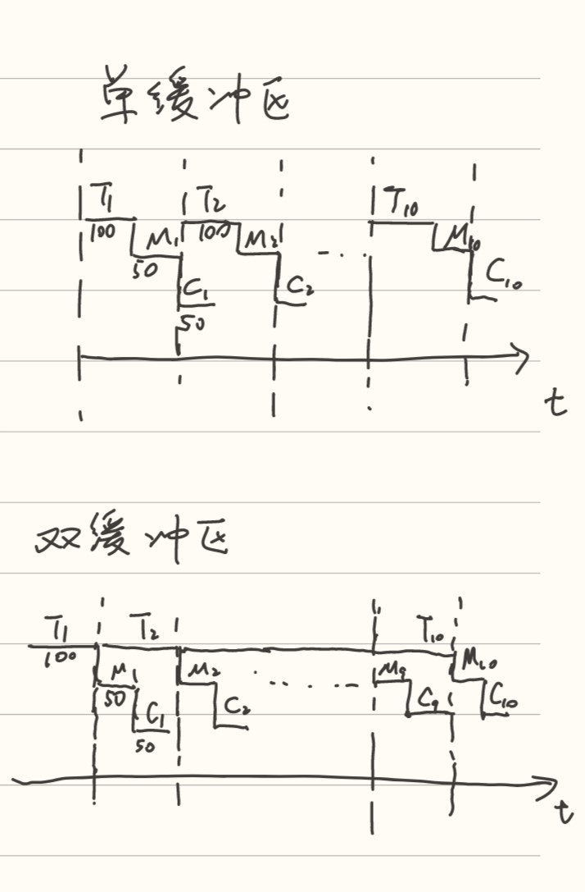
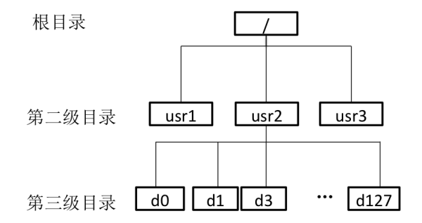

os-homework6
os-homework6
-
文件系统的性能对整体系统的性能影响很大，请总结在实现文件系统时可以从哪些方面提高文件系统的性能，简要给出这些手段的具体解决思路。
-
尽量减少访问磁盘的次数，措施包括使用块高速缓存和目录项分解法等等
- 使用更大的块高速缓存能直接减少对磁盘的访问次数，提升文件系统读写性能
- 项目录分解法把目录项（文件控制块）分为两部分：名号目录项，包含文件名以及相应的文件内部号基本目录项，包含了除文件名外文件控制块的其他全部信息。目录文件也分为名号目录文件和基本目录文件。查找一个目录项就分成两步：首先访问名号目录文件，根据文件名查找相应的文件内部号；然后访问基本目录文件，根据文件内部号，可直接计算出相应基本目录项所在基本目录文件中的相对位置和物理位置，并将它直接读入内存，提高了文件目录检索的速度。
-
改善磁盘性能，包括采用磁盘驱动调度改善进程对磁盘的平均访问时间，采用磁盘碎片整理技术等等。当多个访盘请求在等待时，系统采用一定的策略，对这些请求的服务顺序进行调整安排，使寻道时间和延迟时间都尽可能小的那个访问请求可以优先得到服务，并降低若干个访问者的总访问时间，增加磁盘单位时间内的操作次数，达到降低平均磁盘服务时间的目的，从而实现公平、高效的访盘请求。磁盘碎片的产生是因为文件被分散保存到整个磁盘的不同地方，而不是连续地保存在磁盘连续的簇中形成的。文件碎片一般不会在系统中引起问题，但文件碎片过多会使系统在读文件的时候来回寻找，引起系统性能下降，严重的还要缩短硬盘寿命。磁盘碎片整理技术对长期运行产生的磁盘碎片进行整合，可提高磁盘的整体性能和计算机的运行速度。
-
-
简述文件控制块（FCB）的主要内容。
- 基本信息
- 文件名：字符串，通常在不同系统中允许不同的最大长度，可修改
- 物理位置
- 文件逻辑结构：有 / 无结构（记录文件，流式文件）
- 文件物理结构：（如顺序，索引等）
- 访问控制信息
- 文件所有者（属主）：通常是创建文件的用户，或者改变已有文件的属主
- 访问权限（控制各用户可使用的访问方式）：如读、写、执行、删除等
- 使用信息
- 创建时间，上一次修改时间，当前使用信息等。
- 基本信息
-
在 I/O 系统中引入缓冲的主要原因是什么？某文件占 10 个磁盘块，现要把该文件的磁盘块逐个读入主存缓冲区，并送用户区进行分析。一个缓冲区与磁盘块大小相等。把一个磁盘块读入缓冲区的时间为 100μs，缓冲区数据传送到用户区的时间是 50μs，CPU 对一块数据进行分析的时间为 50μs。分别计算在单缓冲区和双缓冲区结构下，分析完该文件的时间是多少？
- 引入缓冲的主要原因：提高外设利用率，匹配 CPU 与外设的不同处理速度，减少对 CPU 的中断次数，提高 CPU 和 I/O 设备之间的并行性。
- 单缓冲区：因为 T>C，所以处理一块磁盘需要 T+M=150μs, 总时间 (T+M)*10+C=1550μs
- 双缓冲区：因为 T=M+C，所以处理一块磁盘需要 T=100μs, 总时间 T*10+M+C=1550μs
- 
-
分析磁盘访问数据的时间。假设磁盘请求以柱面 10、35、20、70、2、3 和 38 的次序进入磁盘驱动器。寻道时磁头每移动一个柱面需要 6ms，以下各算法所需的寻道时间是多少：
- 先来先服务：15,10,35,20,70,2,3,38 共 (5+25+15+50+68+1+35)*6=1194ms
- 最短寻道时间优先：15,20,10,3,2,35,38,70 共 (5+10+7+1+33+3+32)*6=546ms
- 扫描算法 SCAN：15,20,35,38,70,85,10,3,2 共 (5+10+15+3+32+15+75+7+1)*6=978ms
- 扫描算法 LOOK：15,20,35,38,70,2,3,10 共 (5+10+15+3+32+68+1+7)*6=846ms
说明：假设以上三种情况磁头初始位置为 15。对于扫描算法，磁头当前向大柱面号方向运行，磁盘最大柱面号为 85，分别讨论 SCAN 和 LOOK 算法的寻道时间。
-
在文件系统中，访问一个文件 f 时首先需要从目录中找到与 f 对应的目录项。假设磁盘物理块的大小为 1KB，一个目录项的大小为 128 字节，文件的平均大小为 100KB。该文件系统的目录结构如图所示。假定不考虑磁盘块的提前读和缓存等加速磁盘访问的技术。回答以下问题：
- 按照当前的目录结构，且采用串联文件方式对数据块进行组织，并且根目录的目录项已读入内存中。如果目标文件 f 在第三级目录下，且其对应的第三级目录的目录项可以一次从磁盘读出，访问文件 f 中的一个块平均需要访问几次磁盘？
- 根目录的目录已在内存，因此可以直接读取到对应 usr2 的目录项，进而需要访问磁盘读取 usr2 目录的内容（即对应 d0-d127 的目录项）。一个磁盘块可以放 2 ^ 10/(2^7)=8 个目录项，所以读取全部 d0-d127 的目录项需要访问 128/8=16 次磁盘，平均需要访问 (1+16)/2=8.5 次磁盘。
- 进一步，需要读取第三级目录的内容（即对应目标文件 f 的目录项），因为题目未给出第三级目录下有多少文件，因此可按 1 次从磁盘中读出对应 f 的目录项来计算。
- 文件占用的磁盘块数为：100/1=100 块，按照串联方式进行组织，访问一个块平均需要访问磁盘 (1+100)/2=50.5 次。
- 如果采用 i 节点的方法来构建文件目录，假定文件名占 14 个字节，i 节点的指针占 2 个字节。如果仅采用直接索引，每个第三级目录下的文件数不超过 50 个，且根目录的 i 节点已读入内存，访问第三级目录下的一个文件的一个块平均需要访问几次磁盘？
- 一个目录项为 16 字节，一个磁盘块可以放 2^10/16=64 个目录项
- 先读根目录的内容需读取 1 次磁盘：根目录 inode 已在内存中，根目录下只有 3 个目录项，可以 1 次读取
- 再读取 usr2 的 inode 后，读取 usr2 目录的内容（即对应 d0-d127 的目录项）需读取 1.5 次磁盘：读取整个第三级目录所对应的目录项需要访问磁盘 128/64=2 次，因此平均需要读取 (1+2)/2=1.5 次。
- 再读取第三级目录的 inode，再读取第三级目录的内容需读取 1 次磁盘：由于第三级目录下的文件不超过 50 个，因此读取 1 次磁盘即可将对应全部文件的目录项读出。
- 最后读取文件的 inode，之后读取文件的 1 个块需要读取 1 次磁盘：由于采用直接索引，故根据 inode 可直接读取磁盘上文件的一个块。
- 所以访问第三级目录下一个文件的一个块平均需要 1+1+1.5+1+1+1+1=7.5 次磁盘
- 假设该文件系统的空间最大容量为 16ZB(1ZB=2^70B)。如果文件的 FCB 中包括 512 字节的索引区，且允许采用一级索引进行组织，那么该文件系统支持的最大文件是多少字节
- 文件系统管理的数据块数为 16*2 ^ 70/2 ^ 10=2^64。为表示这些磁盘块，需要 64/8=8 个字节。因此索引区可存放 512/8=64 个磁盘块号。
- 每一块中可用一级索引，存放 1k/8 个磁盘块号。因此，支持的最大文件为 64 * 1K/8 * 1KB=64 * 128 * 1KB= 8MB。
- 按照当前的目录结构，且采用串联文件方式对数据块进行组织，并且根目录的目录项已读入内存中。如果目标文件 f 在第三级目录下，且其对应的第三级目录的目录项可以一次从磁盘读出，访问文件 f 中的一个块平均需要访问几次磁盘？